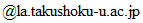

Teaching / 授業
- このページの情報は，拓殖大学 において川本が担当する授業に限ったものです．
- 2020年度は遠隔授業を行いました．詳細は Blackboard を見てください．
目次
授業について
-
すべての授業は日本語で行っています．
授業では，Blackboard （学習管理システム）を利用しています．
すべての授業は講義形式です．毎回の授業の最後に，演習または小テストを行っています．
Blackboardの利用
-
授業に関する連絡事項などはすべて Blackboard を通して行います．
Blackboard では，以下の情報を公開しています．- 講義資料（演習問題，演習問題解答，レポートなど）
- 演習点
- 出席日数
連絡先
-
授業に関する質問や相談などは，
- 授業 前 / 後
- メール
- 研究室
メールアドレス
-
e-mail: akawamot
 -
- 以下の3点をメールの本文中に書いてください．
- 学生番号
- 氏名
- 受講している授業科目名
研究室
- 八王子国際キャンパス 管理研究棟
-
-
研究室に来る場合には，
メールなどで事前にアポイントメントを取る（約束をする）ようにしてください．
事前連絡なしに研究室に来ても，他の学生対応や業務などのために対応できないことがあります．
-
研究室に来る場合には，
メールなどで事前にアポイントメントを取る（約束をする）ようにしてください．
オフィスアワー
-
前期
- 火曜日：2時限
- 木曜日：3時限
-
後期
- 火曜日：2時限
- 木曜日：3時限
よくある質問・相談
-
私が今までメールなどで受けた質問や相談内容を Q & A 形式でまとめました．
質問をする前に確認してもらえると答えが見つかるかもしれません．- 項目 をクリックすると質問・相談内容と回答が表示されます．
-
- ノートをとる必要がありますか．
-
ノートをとるかとらないかは自由ですが，個人的にはノートをとることをオススメします．
この質問と関連して，「板書の内容を（穴埋め式の）プリントにして配ってください」という要望をよくもらいますが， いまのところ，そのようなプリントを作る予定はありません． - 板書が早いです．ゆっくり書いてください．
-
授業では，教卓の近くに座る学生がどこまで板書をノートに写したか確認しながら
板書するように努めています．
板書が早いと感じたら，教卓の近くの教室前方の席に座るか授業中に指摘してください． - 教室が 暑い・寒い です．冷暖房をつけてください．
-
授業前，教室が 暑い・寒い と感じたら，事前に教室の冷暖房の電源をいれ，
温度調整してくれて結構です．
授業中，暑さ・寒さを感じた場合は，私に直接言ってもらえれば， 他の学生の意見なども聞いたうえで冷暖房の電源をいれます．
また，冷暖房の温度調整も必要に応じて行います．
- 〇〇のため，授業を欠席しました．どうしたら良いですか．
-
正当な理由で欠席した場合には，欠席届を提出してください．私の授業では出席として扱います．
そうでない場合には，欠席として扱います．
なお，欠席届の扱いは授業の担当教員によって異なるので注意してください． - 欠席した日に配布されたプリントをください．
-
プリント教材は原則として，
pdfファイルを Blackboard にアップロードしています．
自分でpdfファイルを印刷して利用してください． - 授業の欠席は成績に影響ありますか．
-
ある回数以上休んだ場合は出席不良で評価に値しないと判断し，成績はつきません．
何回休んだら出席不良となるかについては，科目によって異なりますので， その授業で質問してください． - 授業を何回欠席したか教えてください．
- Blackboard で自分の出席日数を確認できます．
- 試験範囲を教えてください．
- 試験範囲については，授業内でアナウンスしています．
- 期末試験はいつですか．
-
例年，前期は7月下旬から8月上旬，後期は1月中旬から下旬にあります．
試験日の正確な日付は，授業内でアナウンスしています． - 期末試験を休みました．追試験はありますか．
-
正当な理由で期末試験を欠席した場合に限り，
期末試験の追試験はあります．
履修要項をよく確認し，学務課で手続きを行ってください． - 期末試験ができませんでした．救済措置をしてください
-
試験終了後の救済措置は一切行っていません．
- 期末試験の問題用紙・答案用紙を返却してください．
-
問題用紙・答案用紙の返却には応じられません．
問題用紙・答案用紙は一定期間の保管義務があり， 一定期間の保管後シュレッダーで処分しています．
そのため，返却することはできません．
- 単位ください．単位を取るためにはどうしたら良いですか．
- 勉強してください．
- 出席は成績に加味されますか．
-
私の授業では，出席を成績に加味していません．
あくまでも，出席不良でないかを確認する指標として，出席日数を記録しています．
出席不良であった場合には，成績はつかず，成績素点は×となります． - 単位を落としました．再試験は受けられますか．
- 再試験受験には条件があります．学務課で確認してください．
- 単位を落としました．どうにかして単位を認定してください．
-
どうにもなりません．単位取得のための努力は試験前にしましょう．
（年度末に，この類のメールが複数来ますが，どうにもなりません……）
教材
- 教材は Blackboard で公開しています．